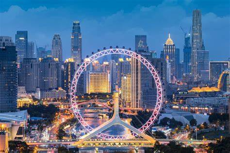
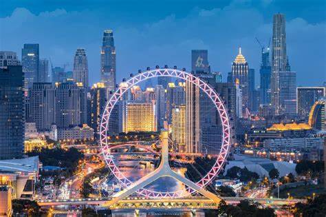
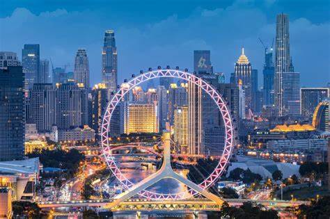

Tianjin, one of the four municipalities directly under the central government in China, is also the largest open city and industrial and commercial city in northern China. Tianjin is referred to as "Jin" for short, which means the ferry crossed by the emperor, also known as "Jingu" and "Jinmen". The location of Tianjin was originally an ocean. More than 4,000 years ago, the seabed was slowly exposed under the action of the Yellow River sediment, forming an alluvial plain.The Tianjin area was inhabited by humans during the Shang and Zhou dynasties, but it was formed later as a city. The opening of the Grand Canal in the Sui Dynasty made Tianjin, which is located in the north of the canal and convenient for river and sea transportation, increasingly important. "Huihaikou" is famous in the annals of history. After the mid-Tang Dynasty, Tianjin became a water and land terminal for transporting grain from the south and silk to the north.
There are about 80 skyscrapers over 130 meters in Tianjin, ranking among the highest in the world. However, unlike Hong Kong and other cities, the layout of skyscrapers in Tianjin is scattered, and most of them are gathered in the central city of Tianjin and the core area of Binhai New Area. Among them, Goldin Financial 117 is the tallest building in the area north of the Yangtze River in China[76]. In addition, a large number of modern skyscrapers are being constructed in the Binhai New Area, among which the buildings in the Xiangluowan Business District have begun to take shape. At present, the skyscrapers that have been built in Tianjin, and the top three tallest are Tianjin International Financial Center, Tianjin World Financial Center and Kerry Center. Skyscrapers over 500 meters under construction include Goldin Finance 117 and Tianjin Chow Tai Fook Center.
